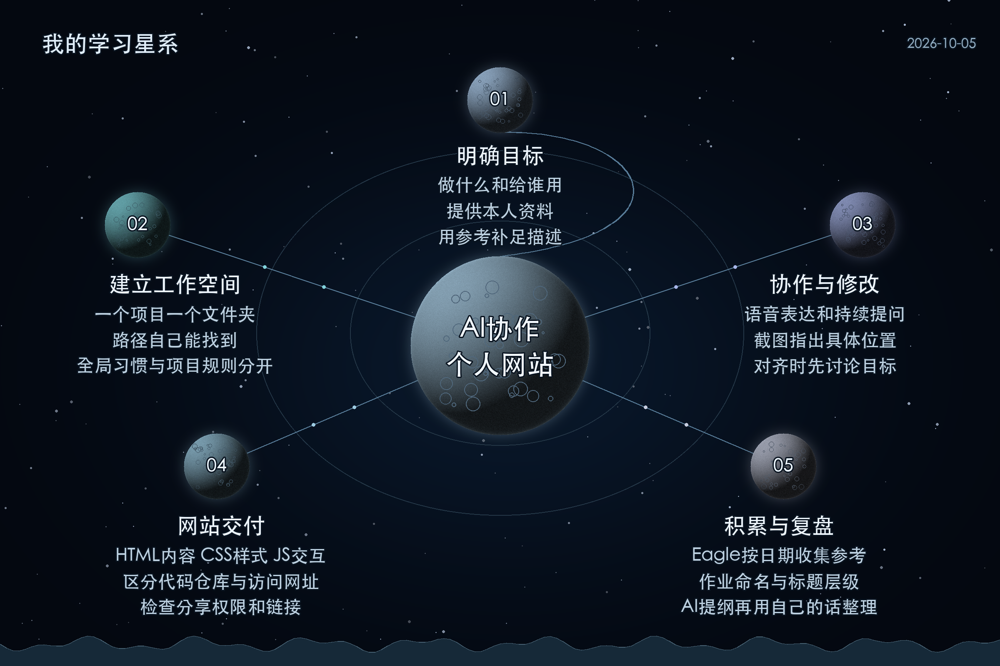

把想做的事情说清楚，找一个具体参考，再让AI在独立项目里做出能打开的第一版。工具安装、权限设置和项目管理，都是为这个目标服务。

从中央主题出发，沿轨道阅读五个分支。点击导图可打开原尺寸。明确目标
建立工作空间
- 一个项目一个文件夹
- 路径自己能找到
- 全局习惯与项目规则分开
协作与修改
- 语音表达和持续提问
- 截图指出具体位置
- 对齐时先讨论目标
网站交付
- HTML内容 CSS样式 JS交互
- 区分代码仓库与访问网址
- 检查分享权限和链接
积累与复盘
- Eagle按日期收集参考
- 作业命名与标题层级
- AI提纲再用自己的话整理
先记住这五个重点
- 目标要包含用途和真实资料。只说做个人网站，AI容易补上自己猜测的介绍、栏目和风格。
- 参考可以是截图或网站链接。指出喜欢的版式、图片位置和交互，比笼统地说高级好看更容易落实。
- 项目像一个工作房间。个人网站、小工具、内容发布分别建文件夹，后续找文件和修改才方便。
- 先做出能用的第一版。再通过截图、具体位置和反馈逐步修改，遇到问题继续问。
- AI可以整理录音的大纲；真正复习时，要能用自己的话说明每个重点和操作理由。
今天学的完整流程
给目标与资料 → 找参考 → 在项目里制作 → 看第一版并修改 → 发布并检查链接 → 保存作品与学习经验。
能说清楚就算抓住重点
- 我的网站给谁看，最想让对方记住什么？
- 我选的参考好在哪里，哪些部分要换成自己的内容？
- 作品文件在哪，别人从哪个链接能够打开？
记录范围：本日只有17时开始的这一份录音，不代表全天课程。课堂主线主要出现在00:00至约01:33；后段零散操作讨论没有当作新授课内容。
把目标说具体的四项信息
先交代要做的东西和用途，再给真实素材、想参考的效果、最后的交付方式。例如：给别人看的个人网站，需要个人介绍、作品和能访问的网址；与只在电脑上保存一份代码，是两种交付要求。
不确定效果叫什么，可以先给截图或链接，请AI解释名称和实现思路。把解释中真正需要的部分补进自己的要求。
课堂定位：目标与参考见记录A 09:40、01:02:06至01:07:52；先对齐目标见01:11:21至01:12:14。
一 让AI在正确的项目里工作
安装通用工具时，课堂演示可以从普通新聊天开始；制作网站时，再创建独立项目。选择电脑上自己能找到的文件夹，例如桌面里的个人网站制作，确认打开的是这个项目，再发送需求。产物和后续修改围绕这个目录管理。
三种规则各有什么用
- 全局自定义指令：反复适用的协作习惯，例如称呼、沟通方式，以及说对齐时先讨论目标。
- 项目规则：只约束某个项目的文件位置、交付格式和参考来源，避免让所有项目都执行同一套要求。
- 记忆：帮助沿用偏好和背景。偏好变化时，要明确告诉AI更新，不能假设旧信息会自动失效。
课堂提到AGENTS.md这类Markdown规则文件，以及在访达显示隐藏文件的Command＋Shift＋句号。这里只记它的作用：保存需要反复遵守的规则。具体软件的文件名和读取方式，不能混为一套。
修改时给可以执行的反馈
老师用西红柿炒鸡蛋的例子说明：要求太宽泛，AI会加上它认为应该有的东西。修改时，把希望保留的内容说具体，再截图标出要调整的部分。正向要求更容易说明最终要什么；必要的删除要求也要指向明确对象。
目标还没有想清楚时，先聊天或使用计划模式。课堂的对齐规则，是让AI先与你梳理目标，等你明确后再制作。语音输入则帮助更快表达想法，减少打字造成的停顿。
课堂定位：A 01:56至07:22 项目；14:37至20:15 记忆与规则；21:58至24:29 具体反馈；01:08:36至01:12:14 语音与对齐。权限部分是课堂演示设置，不意味着应把所有软件都永久设为完全访问。
二 做出并交付一个个人网站
网站的三个基本部分
| 部分 | 主要作用 | 看作品时观察什么 |
|---|
| HTML | 承载内容与结构 | 介绍 作品 栏目是否齐全 |
| CSS | 控制样式与布局 | 字体 颜色 间距和排版 |
| JavaScript | 处理交互逻辑 | 按钮 滚动响应和动态行为 |
这是帮助初学者理解的分工，不是要求你手写代码，也不是严格的一一对应关系。课堂转写的GS，在这段上下文中整理为JS，即JavaScript。
代码保存和网站发布是两件事
GitHub仓库用来存放网站代码和相关文件。能看见代码，不等于已经有一个给别人直接浏览的网站。发布后要取得访问网址，再检查可见范围；课堂分别演示了站点分享和GitHub相关发布方式。
如果别人打开后只有登录页，先检查分享权限和是否完成发布。自己电脑能打开的页面，也不等于别人能打开。作业交付的重点是网址真正可访问，而不是只展示制作过程。
第一版完成后的检查
- 个人介绍和作品来自自己的资料，AI补出的身份、经历和文案逐项确认。
- 参考里的布局、风格与自己的内容相匹配。
- 图片、视频、按钮和链接能够显示或使用。
- 访问网址与仓库地址分别保存，分享对象有正确权限。
课堂定位：A 25:16至28:01 站点发布；45:31至46:56 网页组成；47:55至57:05 GitHub与网址；01:20:30 个人网站链接必须能打开。
三 把素材与作业整理好
Eagle作为参考素材库，集中收集图片、视频和音频。资源库放在自己能找到的位置，再按日期创建收集文件夹。这样后续制作封面、账号头像、网站或视频时，可以取出以前保存的参考。收集也是培养审美的过程。
飞书作业文档用姓名或学号加日期命名。作业一、作业二等使用标题样式，让目录可导航；提交时附上作品网址、需要的截图和遇到的卡点，并检查笔记链接和作业链接的分享权限。
录音中可以确认的当日练习
- 完成个人网站，并提交能打开的网址。
- 完成课堂要求的账号注册，准备主页或注册完成截图。
- 收集喜欢的设计参考，课堂提到当天先收集10张。
- 有基础时继续改善效果；初学者先把第一版做出来。
复习练习
用自己的话解释：为什么要分别建项目？为什么一个参考能帮助AI理解目标？网站代码保存和网站公开访问有什么区别？再打开自己的作品，逐项检查答案能不能落到具体操作上。
来源与转写核对
记录A 2026-10-05 17:00 记录 时长01:43:45
一楼、一狗等在素材库语境中统一为Eagle；客栈在个人网页语境中整理为个人网站；订单号、get up等在代码仓库语境中整理为GitHub。不能确认的参考网站名称、插件命令和软件快捷键组合未补写。
课堂关于素材可商用、权限安全和邮箱可靠性的口头概括，没有作为已经验证的结论。参考素材和开源代码的使用范围仍需看原资源许可；不要仅凭展示平台或AI回答判断。
整理日期：2026-10-07。依据完整导出转写和上下文归纳，未逐段回听音频。此份是复习底稿，老师要求的个人理解需要你自己补充。
课程学习笔记 · 整理于2026年10月7日。内容按课堂转写整理，未逐段回听音频。